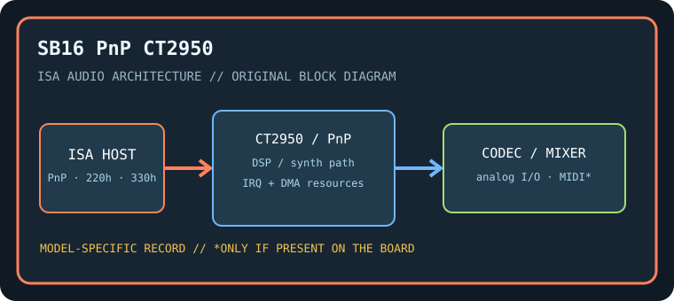

[ INDIVIDUAL COMPONENT // SOUND HARDWARE ]
Creative Sound Blaster 16 Plug and Play (CT2950)
This entry is the CT2950 Plug and Play Sound Blaster 16. Its PnP resource assignment and initialization differ from jumper-configured SB16 boards; do not apply another CT model’s switch map.

Model-specific specifications
| Catalog identity / chipset / DSP | Creative Sound Blaster 16 Plug and Play (CT2950). Creative SB16 DSP with model/revision-specific firmware, plus OPL3-compatible FM circuitry; verify exact oscillator/synth IC by board inspection. |
|---|---|
| Audio codec / conversion | 16-bit stereo PCM analog path. The codec implementation is board-revision-specific; preserve the full CT2950 PCB revision and codec-chip marking. |
| Bus / I/O / ports | 16-bit ISA. PnP-assigned Sound Blaster port (commonly 220h), MIDI port (commonly 330h), and OPL decode (commonly 388h); confirm the values reported by Creative PnP configuration. |
| IRQ | PnP-configured IRQ, commonly 5, 7, or 10; change via the period configuration utility/BIOS and check for conflicts. |
| DMA | PnP low DMA commonly 1 and high DMA commonly 5, subject to host assignment; verify both programmed resources and software environment variables. |
| Driver / operating system | Creative CTCM/CTCU-era configuration utilities and DOS setup tools, with period Windows drivers for supported Windows releases. PnP ISA BIOS behavior varies; modern OS compatibility is not assumed. |
| Motherboard compatibility | Requires an ISA PnP-capable motherboard/BIOS or a compatible Creative configuration utility. Non-PnP legacy BIOS systems may need DOS initialization before applications; test resource persistence across cold boot. |
| Sound standards / interfaces | Sound Blaster 16 PCM, AdLib/OPL3 music and MPU-401 UART-compatible MIDI; this is not an AWE32/64 EMU8000 model. |
| Connectors / power | ISA slot power; use only the analog, MIDI, CD-audio, and auxiliary connectors physically present on this exact board. Inspect the edge bracket, keyed headers, PCB revision, and manual before connecting. |
Compatibility & preservation notes
This entry is the CT2950 Plug and Play Sound Blaster 16. Its PnP resource assignment and initialization differ from jumper-configured SB16 boards; do not apply another CT model’s switch map. The precise DSP/codec package, firmware, resource assignment, and OS driver release must be matched to the physical SKU. Record the actual base port, IRQ, DMA channels, driver version, motherboard chipset, and BIOS configuration used in a working test rather than copying family defaults.
- Photograph the complete model number, PCB revision, major IC markings, jumpers, connectors, and any daughterboard before service.
- Check DMA and IRQ reservations against storage, serial/parallel, and other ISA devices; test PCM, synthesis, and MIDI functions independently.
- Power down and unplug the host before fitting/removing ISA hardware. Keep the exact manual and original setup/driver media with the specimen.
Manufacturer manuals & archival sources
- Internet Archive — Creative Sound Blaster 16 Plug and Play CT2950 manualArchive catalog search for original manufacturer-authored manual/setup documentation for this model; confirm the full SKU and revision in any scan.
- Internet Archive — Creative CT2950 PnP utilities and driver diskArchive catalog search for preserved manufacturer driver, utility, or bundled software media for this specific board.
- Internet Archive — Creative Sound Blaster 16 CT2950 documentation archiveAdditional model-specific catalog records and manuals; use the physical board marking to exclude adjacent revisions and related products.
Archive search links are discovery records rather than claims that one particular scan is an original; verify provenance, revision and completeness before relying on a scanned setup guide.